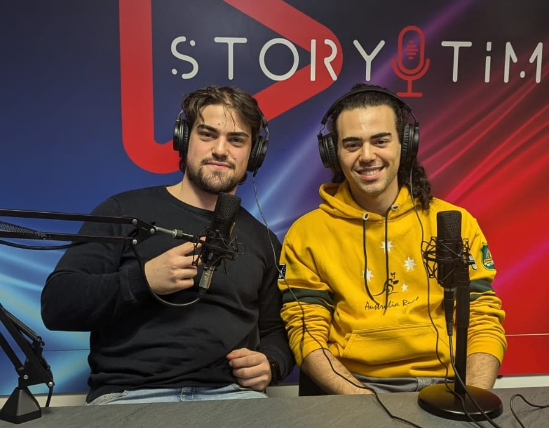

San Lazzaro Rugby Club in Radio: Intervista a Story Time!
Oggi è stata una giornata emozionante per il San Lazzaro Rugby Club! Il presidente del Club, Simone Coletta, insieme a Davide, uno dei membri del club con un’esperienza preziosa nel consiglio comunale di San Lazzaro, hanno avuto l’opportunità di essere intervistati in radio da Story Time.
L’intervista, che andrà in onda fra 48 ore, venerdì 25 ottobre, è stata un’esperienza molto interessante e arricchente. Nonostante una leggera tensione iniziale, essendo la loro prima apparizione in radio, si sono sentiti subito a loro agio grazie alla calda accoglienza dello staff. Durante la trasmissione, è stato chiesto loro di raccontare la storia del club, come è nato e i motivi che li hanno portati a fondarlo.
Hanno condiviso con orgoglio che il San Lazzaro Rugby Club non è solo un luogo di allenamento, ma una comunità aperta a tutti, dedicata a chiunque abbia la passione per il rugby o voglia scoprirlo. Hanno parlato dei progressi del club e degli obiettivi futuri, rivelando in anteprima una grande novità: l’organizzazione di un torneo di rugby 7s.
Il torneo sarà gestito interamente dal San Lazzaro Rugby Club e si terrà proprio a San Lazzaro. Sarà un’occasione per i membri del club, specialmente per quelli che non hanno ancora avuto la possibilità di disputare una partita, di mettersi alla prova. Il torneo sarà aperto anche ai giocatori di altre squadre che, per vari motivi, non trovano spazio durante le competizioni ufficiali e spesso restano in panchina. L'obiettivo è creare un’opportunità inclusiva per tutti, promuovendo il rugby come uno sport accessibile.
Questo progetto fa parte della visione di crescita del San Lazzaro Rugby Club, non solo per il club stesso ma per tutto il rugby nella zona. Durante l’intervista sono state poste numerose domande interessanti, che hanno permesso ai rappresentanti del club di spiegare la missione e l'impegno nel far crescere questa realtà.
Il club è orgoglioso di essere stato invitato in radio, segnando un importante traguardo nella sua storia. Sono già in programma altre collaborazioni mediatiche, tra cui una possibile partecipazione su Radio Fresh, anticipata in un precedente articolo. Questa è solo la prima di tante occasioni per far conoscere la storia del club e coinvolgere sempre più persone.
Simone e Davide durante l'intervista negli studi radio di Story Time
Il San Lazzaro Rugby Club non vede l’ora di far ascoltare l’intervista che andrà in onda venerdì e invita tutti a seguire il club per tutte le novità future. Il loro cammino è appena iniziato, e tante sorprese sono in arrivo!